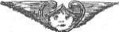
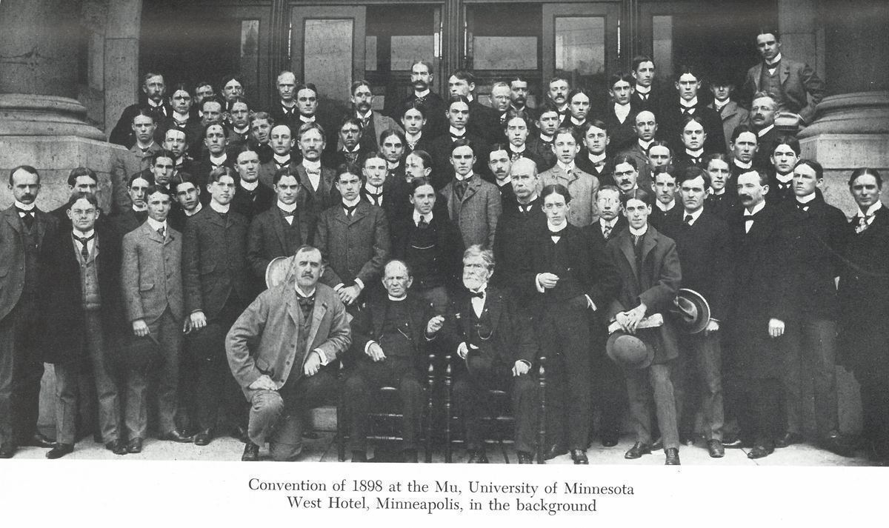

From the Archives · 1836
Martindale's 1898 address on the founding of Psi Upsilon

In 1898, Edward Martindale Theta 1836, a founder of Psi Upsilon, attended the 65th Psi Upsilon Convention in Minneapolis, MN on May 5th. He gave a remarkable keynote speech, which both reflected on the founding of the fraternity, and how much it had grown beyond the expectations of its founders. You can read a copy of this meaningful piece of Psi U history below.
Engagement idea: Print and read at chapter or alumni meeting. Martindale AddressDownload
PSI UPSILON. [ADDRESS OF COL. EDWARD MARTINDALE (Theta 1836) OF Des Moines, IA., AT THE CONVENTION IN THE 65TH YEAR OF THE FRATERNITY WITH THE Mu CHAPTER, UNIVERSITY OF MINNESOTA, MINNEAPOLIS, MINN., MAY 4, 1898.]
Mr. President. and Gentlemen of the Psi Upsilon : MY BROTHERS :-I hope you will attribute to the infirmities of my eighty-one years any insufficiency in my acknowledgments for your generous reception of me. It has touched my heart, and encourages me to read to you a few remarks, which I trust you will find appropriate to the occasion.

When I look at this splendid assemblage of PSI UPSILONS I find it difficult to credit the evidence of my senses, and am rendered almost speechless by wonder and admiration. If to any one of you it is a glorious sight, think what it must be to me. In all the sixty-five years since the day of our Society's organization this is the first time it has been my fortune to be present at one of its National Conventions, and witness one of the mighty gatherings of all the Tribes. Imagine, then, how difficult it must be for me to feel sure of what I see and to realize where I am at. For observe, that I am obliged to admit proudly to myself-and to you, too-that I am actually one of the humble Founders of the most magnificent, the most glorious Association of the kind in existence.
For you, who have been part of the grand procession, and witnessed her rapid development from infancy into her present proud proportions, it is easy to realize that what seems to me like some stupendous miracle, is actual, plain matter of fact. But for me, it is different. My difficulty is -as your penetration has already divined - that I am one of the Founders! Look back with me to the early autumn of the year 1833, and come in imagination with me to old Union College, my Alma Mater, and look into one of the rooms in the attic of the "Lower College Building," occupied by a Freshman and his Chum. There we shall see three young men - one of them but seventeen years of age - with a profound air of mystery and secrecy, with bated breath and subdued tones, engaged in considering and devising a plan for the founding of a New Secret Society. These three callow youths were very much in earnest, but they had no self conceit or overweening confidence in their success, and they were sufficiently modest in their ·anticipations of the future. They had not the slightest conception of the importance of what they were doing. They never dreamed of the great results that were to flow from their simple plans, although it is certain that they "builded [sic] better than they knew." 'l'hey were my chum, Merwin H. Stewart, and our next neighbor, Charles W. Harvey, and myself. What a weird and mysterious atmosphere pervaded the room I need not describe. Yon can easily understand that, for you have all been through something like it yourselves! The strain of intense feeling and the weight of solemn secrecy are oppressive, but deliciously exciting. These are all Freshmen, but are soon to be reinforced by the good judgment, superior wisdom and extraordinary ability, well known to belong exclusively to the Sophmore [sic] Class! These came to us in the course of some few days in the persons of my good friends, Samuel Goodale, here present, and his relative and chum, Sterling G. Hadley, both of whom yon have always delighted to honor, and whose names are well known and most deservedly venerated by every Chapter in the United States. To these five names were soon after added George W. Tuttle and Robert Barnard, both Freshmen. At a meeting of these seven men, in solemn conclave assembled, the Psi Upsilon Society was soon after organized and duly founded, Hadley being made our first President, and Stewart, I think, Secretary. and Committees appointed to report on Name, Badge and Motto, on one of which I had the honor to serve. Then followed the adoption of our present elegant Name, beautiful Badge and appropriate Motto. And when the Badge first appeared. openly worn and avowed. the astonishment and admiration they excited were such as to be beyond description, mingled with surprise at the temerity and novelty of our ambitious enterprise.
Thus was our Society launched upon the broad and turbulent sea of College politics, confronted by an unknown future and the indifference or hostility of the older Associations. But their feeling of hostility was soon changed into a very different one, and, finally, overtures for alliance and mutual aid were made to us.

We had all received invitations to join the old and prosperous societies of the college, all of which had been sternly and peremptorily declined for the unavowed, but real, reason that they were not considered good enough - their general standard of character and scholarship not high enough, and many of their members not such that we could feel like taking them to our hearts as brothers.
No Junior or Senior was invited or permitted to join in the aspiring undertaking. We determined to originate something new and unprecedented, if possible, better than anything we could see in the societies around us, and to make good scholarship and good taste, sound character and sound sense, the tests of membership in the Psi Upsilon Society.
Soon, from the elite of both the younger classes, accessions came rapidly, as our purpose became understood, and we were cheered and encouraged by the acquisition of such men as my dearest life-long friends, Edward F. Cushman and Isaac Dayton; then Backus, Brown, Gott, Conklin, Reed, and others; and, when the name of Hooper C. Van Vorst was enrolled among us, we received the Gold Standard Stamp of unquestionable Solvency and Universal Currency.
From that date the career of the Society has been one of unprecedented prosperity and rapid progress. It has been onward and upward, and, to its honor be it spoken, without a blemish. If its rank can be measured by the multitude of its members who have attained the highest distinction in every walk of life, it can justly claim to be one of the first among all peoples and in all lands.
I will not weary you with names, for the task would be endless. But you will share with me the pride I feel in pointing to the Presidency of the United States, the Cabinet officers, judges, both State and National, the Senate and House of Representatives, the Bench and the Bar, the long catalogue of Governors of States, bishops, eight in number, and other eminent divines, diplomats, poets, professors, orators and statesmen, business men in every calling, men of peace and men of war, who have rendered distinguished service to our country on land or sea, and finding each and all of the long catalogues made more illustrious by the name of some Psi Upsilon.
It must be interesting - to consider, for a moment, what should be the cause of such marvelous results from such modest, such seemingly inadequate sources.
For all things under the sun there must be a reason, no matter how unreasonable they may appear. For this extraordinary phenomenon, for this unprecedented success, there must be some underlying principle, some rational explanation, some sufficient reason. Such reason there has been. It has worked silently and gently, without observation or pretension, without noise or living voice, but with vital energy, unerring instinct and irresistible force. It has always been pointing to general results and leading up to the final consummation of our hopes and wishes in the present grandeur of our Society.
I have often tried to think how it was that such large results could flow from such small beginnings. What is that mighty cause? If I may suggest some reply, I would say that it is not far to seek, and I will try to state it briefly. It seems to me two-fold; and. first, it is found in the first law and the very nature of all things. Whatever is an empty show, however plausible the sham may be, it must die. Whatever is instinct with truth and honesty, and sincerity and energy, nothing can kill it.
The young Psi Upsilons started out with the simple intent to do right; to maintain their natural sturdy independence; to deserve their own self-respect and the regard of their fellows; to rise to a better life in by aiming higher and striving for something better than they found in their surroundings; to make real merit of some kind an indispensable condition of membership; to preserve a strong sense of the beauty of honesty, and of living remembrance of what they came to college for, and a firm determination to do their duty, especially as students and as gentlemen, to the best of their ability.
Naturally and necessarily this gave them a good standing once and an ever increasing force, drawing as the magnet draws - like attracting like with ever increasing volume, until their future was assured, and the foundations of their coming greatness were laid broad and deep and firm.
The other reason, although subordinate, has also been potent in its influence. Look at the beauty of our Badge, the graceful shape of its two Greek letters - the most elegant in the whole Greek Alphabet - the musical and sonorous sound of our name - Psi Upsilon - all appealing to both the eye and the ear and satisfying the highest requirements of good taste and good judgment, to say nothing of the significance of the Mystic Legend of our Motto translated to the eye by its clasped hands. All these attracted instant attention and excited great admiration. Their adoption was a happy inspiration and greatly contributed to the approval we received.
Thus I have endeavored to account in some degree for the - modest origin and wonderful development of our Fraternity from its seven youthful Founders to the present proud Roll of 10,000 Members.
Its past has been a triumphal march, a continuous and magnificent success. Its future, gentlemen, is in your hands. In the guardianship of such Champions I am persuaded that there can be no question of the future destiny of the Psi Upsilon Society.